ESP32-P4へWireGuardを移植
lwIP版WireGuardをpioarduino環境でビルドし、初期化と基本動作を検証。成立しない場合は別実装またはSSH多段接続へ切り替えます。
M5Stack Tab5 (ESP32-P4) を、キーボード付きポータブルSSH端末に変えるオープンソースファームウェア。
Tab5 SSH Client は、M5Stack Tab5 と Tab5 Keyboard を「持ち歩けるSSH端末」にするファームウェアです。
Wi-Fi 経由でサーバに SSH 接続し、vim や htop のような ANSI/VT 系アプリも動く
本格的なターミナルエミュレータを 1280×720 の画面いっぱいに表示します。
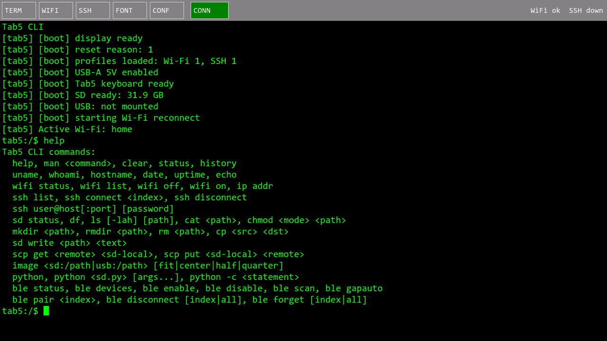
起動直後のローカルCLI。Linux風の内蔵シェルからそのままSSH接続できます。
LibSSH-ESP32 による SSH 接続。スクロールバック、コマンド履歴、256色表示、US/JPキーマップ変換に対応します。
Wi-Fi / SSH の接続先を本体UIで追加・編集し、フラッシュへ永続化。ワンタッチで再接続できます。
scp get / put で SSHサーバと microSD の間をファイル転送。サーバ側から Tab5 のストレージも見えます。
REPL、ワンライナー、SDカード上の .py 実行。M5GFXスプライトを使う gfx 描画APIでデモも動きます。
microSD・USBメモリ・SSHサーバ上の JPEG / PNG / BMP をオーバーレイ表示。リモート画像は自動でキャッシュ転送。
Tab5 Keyboard、USBキーボード、BLEキーボードに対応。Esc / Tab 中心のキーボード操作で完結します。
実機UIを LVGL Webシミュレータ (1280×720) で再現したイメージです。
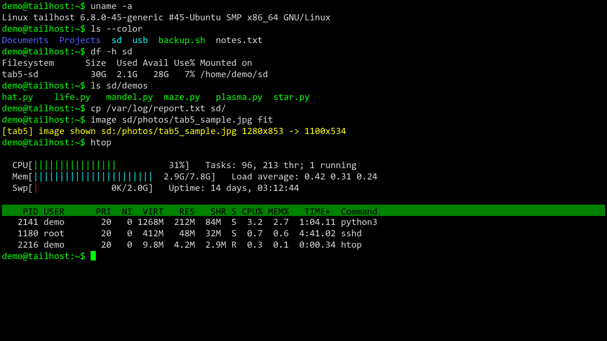
SSH接続中はメニューバーが消え、1280×720 全面がターミナルになります。既定フォント (Terminus 10x20) で 127桁×29行。ANSIカラー、ボールド、反転、罫線・ブロック文字も描画します。
サーバ側にはセッション開始時に小さな FUSE ヘルパーが展開され、Tab5 の microSD / USB メモリが ~/sd と ~/usb としてマウントされます。サーバのシェルから直接 Tab5 のファイルを読み書きできます。
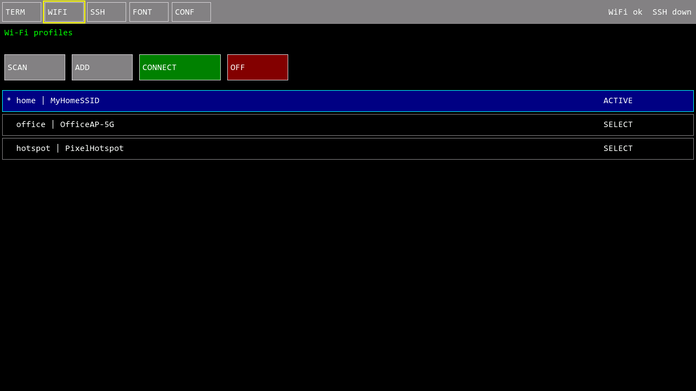
アクセスポイントのスキャン、プロファイルの追加・編集・切替、Wi-Fi の ON/OFF を本体だけで操作。選択中の行は青地+シアン枠でハイライトされます。
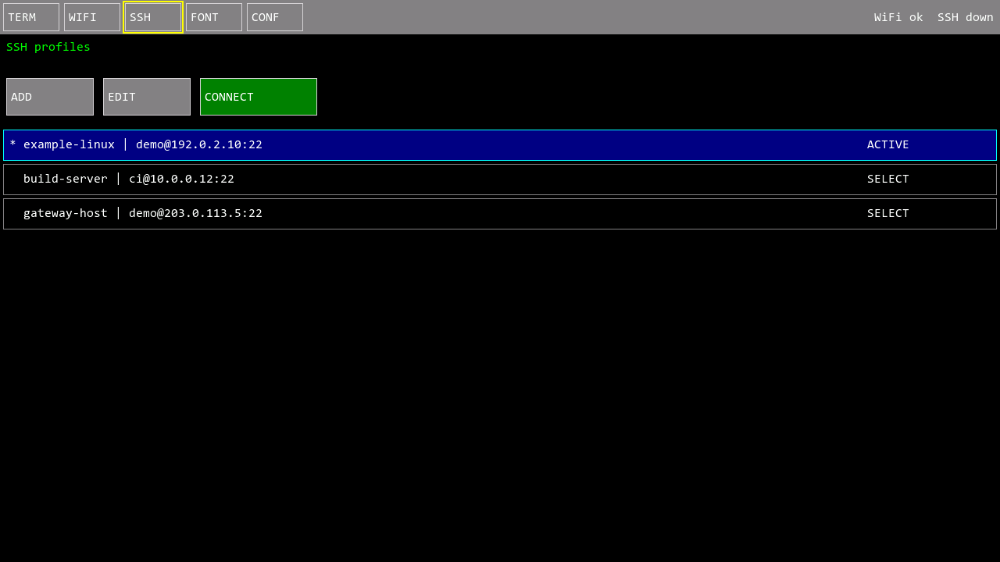
接続先を user@host:port 形式で一覧管理。CONNECT ボタンまたは CLI の ssh connect 0 で即接続。ssh user@host 形式の直接指定では、保存済みプロファイルから認証情報を再利用します。
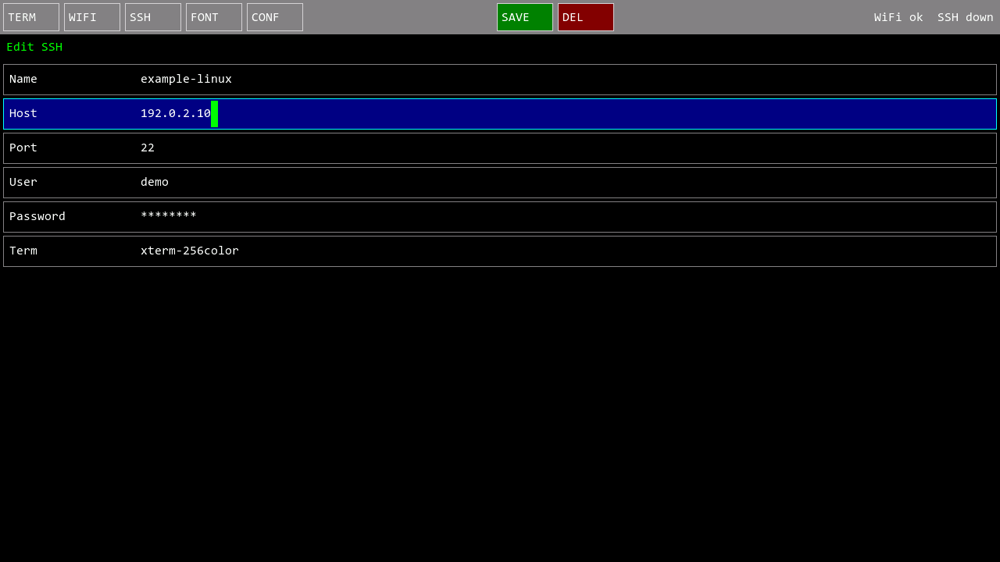
Name / Host / Port / User / Password / Term を画面上で編集し、SAVE でフラッシュへ保存。パスワードはマスク表示されます。
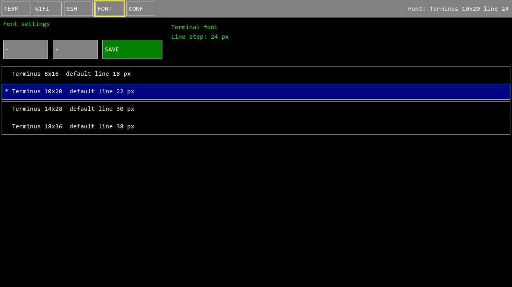
Terminus 8x16 / 10x20 / 14x28 / 18x36 の4サイズから選択。行間は - / + で微調整でき、画面あたり最大 159桁×35行まで表示できます。
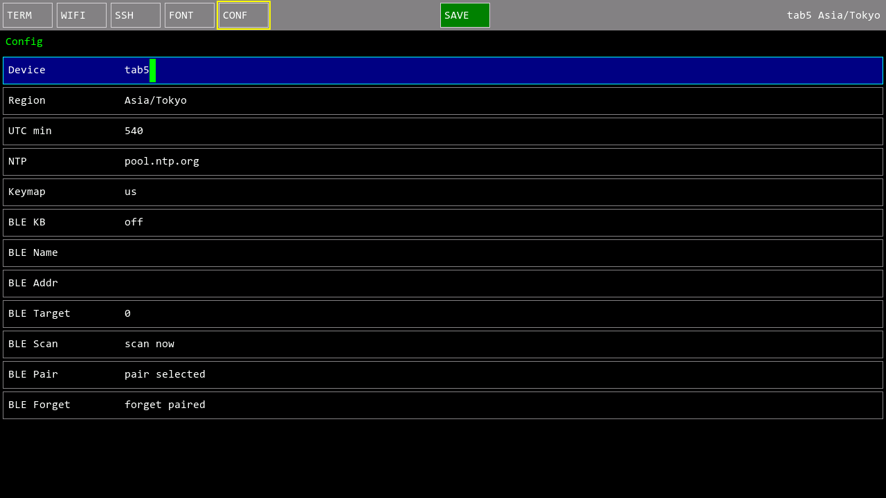
デバイス名、タイムゾーン、NTPサーバ、US/JPキーマップ、BLEキーボードのスキャン・ペアリングまで、設定はすべて本体UIで完結します。
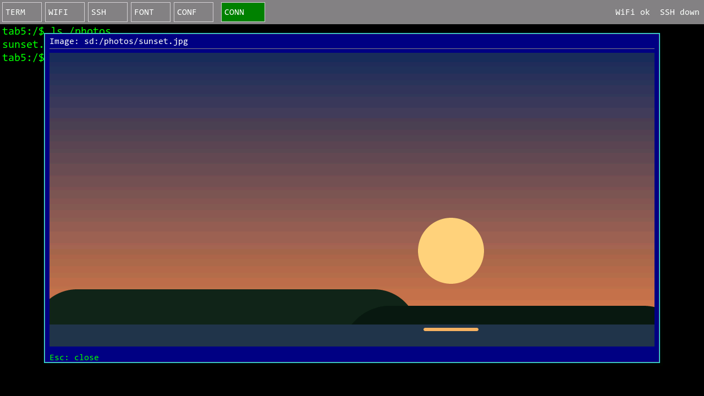
image sd:/photo.jpg fit で microSD / USB / SSHサーバ上の画像をオーバーレイ表示。リモートファイルは microSD のキャッシュへ転送してから描画します。
エスケープシーケンス規格 ECMA-48 (ANSI X3.64) のうち、VT100/VT220 サブセット + xterm 拡張を独自実装しています。
端末種別は TERM=xterm-256color として通知し、SSH の PTY サイズはフォント変更時にも自動で再通知されます (SIGWINCH)。
キーボード操作の TUI アプリ — vim、htop、less、ncurses 系、そして sl — がそのまま動きます。
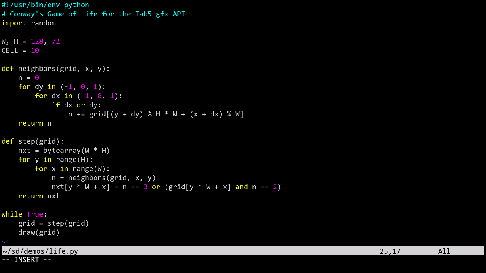
vim がそのまま使えるオルタネートスクリーンバッファ (?1049/?1047/?47)、DECSTBM スクロール領域、カーソル保存/復元 (DECSC/DECRC・SCOSC/SCORC)、カーソル表示制御 (?25) を実装。vim を閉じれば元のシェル画面に戻ります。256色シンタックスハイライトもそのまま表示されます。
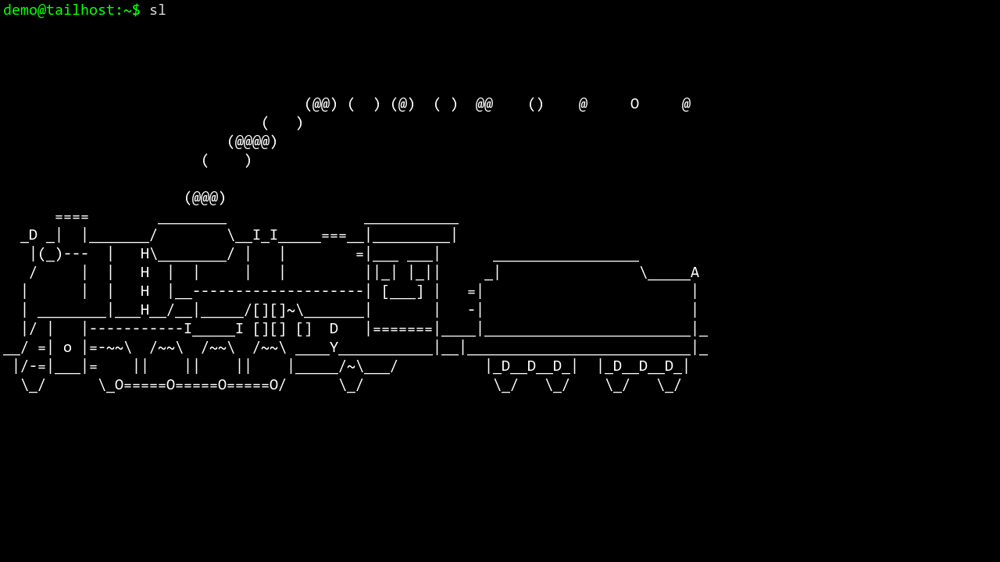
sl も走るカーソル絶対/相対移動 (CUP/HVP/CUU/CUD/CUF/CUB/CHA/VPA)、行・文字の挿入/削除 (IL/DL/ICH/DCH/ECH)、画面/行消去 (ED/EL)、領域スクロール (SU/SD) を実装しているため、画面を書き換えながら動くアニメーション系コマンドも正しく描画されます。
| 対応 | ECMA-48 CSI カーソル制御・編集系一式 / SGR: 太字(輝度)・反転・ANSI 16色・256色 (38;5/48;5)・24bit truecolor (38;2/48;2、RGB565に量子化) / オルタネートスクリーン / スクロール領域 (DECSTBM) / スクロールバック800行 / UTF-8 + CJK全角幅 / 罫線・ブロック・点字 (U+2800台)・Powerline グリフ描画 |
|---|---|
| 非対応 | マウスレポート (?1000系) / bracketed paste (?2004) / 下線・斜体・点滅 / ウィンドウタイトル (OSC 0/2) / 逆インデックス (ESC M) / DEC特殊グラフィック文字集合 / 端末問い合わせ応答 (CPR/DSR/DA) / Sixel等のDCS系画像 |
SSH セッションを開始すると、ファームウェアが小さな FUSE ヘルパーをサーバへ自動展開し、
Tab5 の microSD カードとUSBメモリが、サーバ上の ~/sd と ~/usb にマウントされます。
逆方向の「サーバからTab5が見える」ファイル共有です。
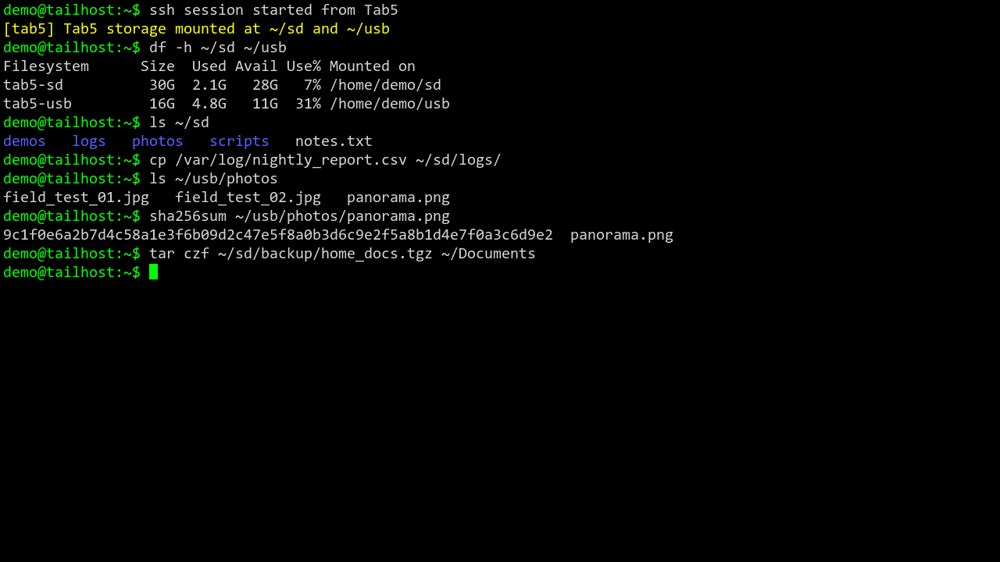
cp・tar・rsync など普段のコマンドがそのまま Tab5 のストレージに使えます。サーバで生成したログやビルド成果物を ~/sd へコピーすれば、そのまま Tab5 で持ち帰れます。サーバ側の image コマンドで ~/sd の画像を Tab5 画面に表示することもできます。
Tab5 のローカル CLI では、オンボードフラッシュ (/flash)・microSD (/sd)・USBメモリ (/usb) の3ボリュームを仮想ファイルシステムとして操作できます。サーバへのマウント対象は microSD と USB メモリの2つです。サーバ側要件は Python 3 + FUSE (セットアップ手順)。
ローカルCLIから MicroPython を起動し、SDカード上のスクリプトを実行できます。gfx オブジェクト経由でスプライトに描画し、gfx.present() で画面へ転送します。
tab5:/$ python -c print('hello')
hello
tab5:/$ python /mandel.py 0 1 8 -1 # progressive Mandelbrot
tab5:/$ python /plasma.py 0 160 16 # sine plasma
tab5:/$ python /life.py # Conway's Game of Life
同梱デモ: progressive Mandelbrot、sine plasma、wireframe hat、Game of Life、starfield、maze。詳細は Python API ドキュメント と デモ一覧 を参照してください。
gfx コマンド処理、present() 転送の推定コストを積算し、Tab5上での実行速度もシミュレートしています。次の大きな改造は、Tab5からWireGuardゲートウェイを経由してTailscaleネットワーク内のSSHホストへ接続するVPN機能です。段階ごとに移植性、接続性、実用性能を確認しながら進めます。機能はまだ未実装です。詳細は VPN実装・実測計画 を参照してください。
lwIP版WireGuardをpioarduino環境でビルドし、初期化と基本動作を検証。成立しない場合は別実装またはSSH多段接続へ切り替えます。
VPN一覧・編集UI、vpn connect/status CLI、split tunnel、MagicDNSを追加。SSHプロファイルから必要なVPNを先に自動接続します。
SSH/SCP/FUSEの速度、CPU・空きヒープ、8時間接続、Wi-Fi復帰、電池持続時間を比較し、実用可能な構成へ詰めます。
M5Launcher経由の起動を含め、LittleFSのマウントとWi-Fi/SSH設定の永続化を安定化します。現在の状況は Issue #1 で追跡しています。
| ハードウェア | M5Stack Tab5 / Tab5 Keyboard / microSDカード / USBケーブル |
|---|---|
| ネットワーク | Tab5 から接続できる Wi-Fi と SSHサーバ |
| サーバ側 (任意) | ストレージマウント機能を使う場合: Python 3 + FUSEユーザーマウント (セットアップ手順) |
PlatformIO でビルドします。詳細は README を参照してください。
# ビルド pio run -e tab5 # ファームウェア書き込み pio run -e tab5 -t upload # bootloader / partition / firmware / LittleFS をまとめて書き込み .\tools\flash_tab5.ps1 -Port COM4